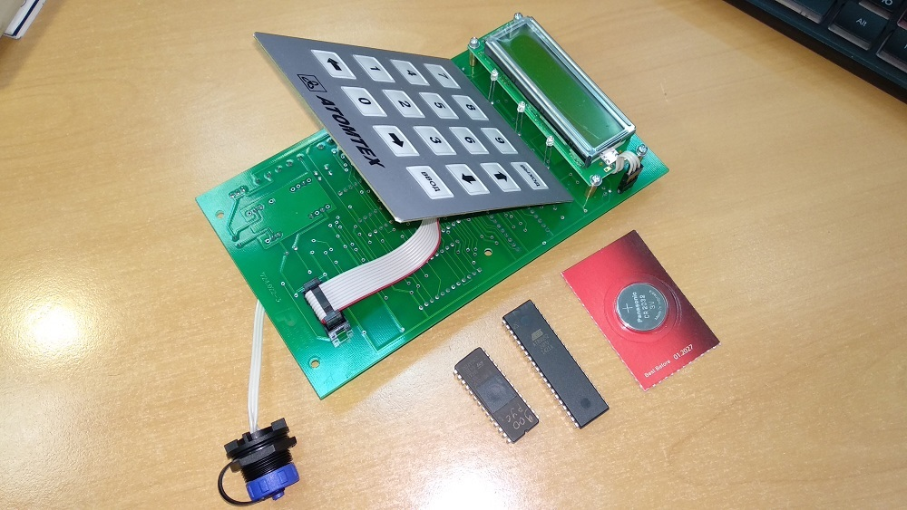
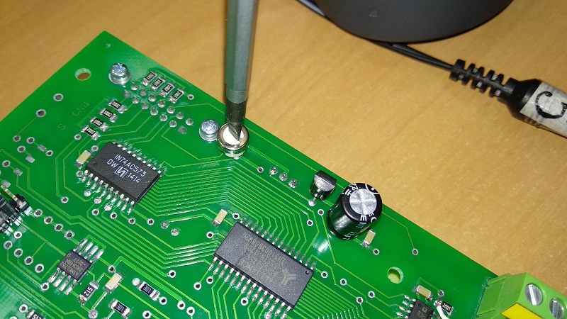
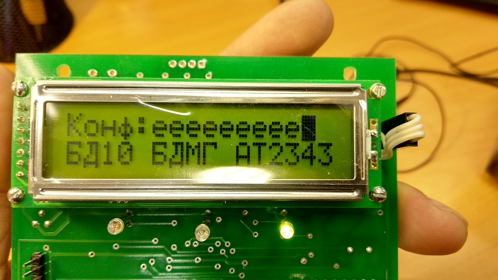
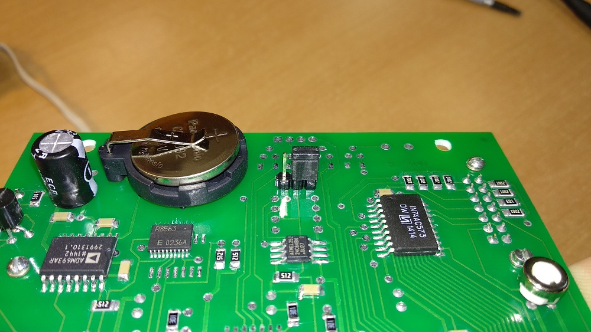
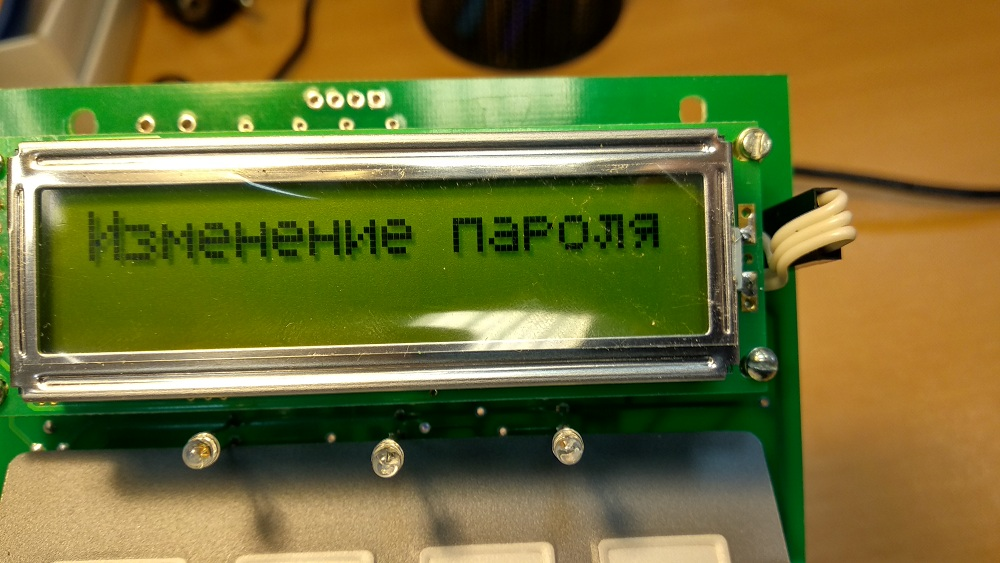
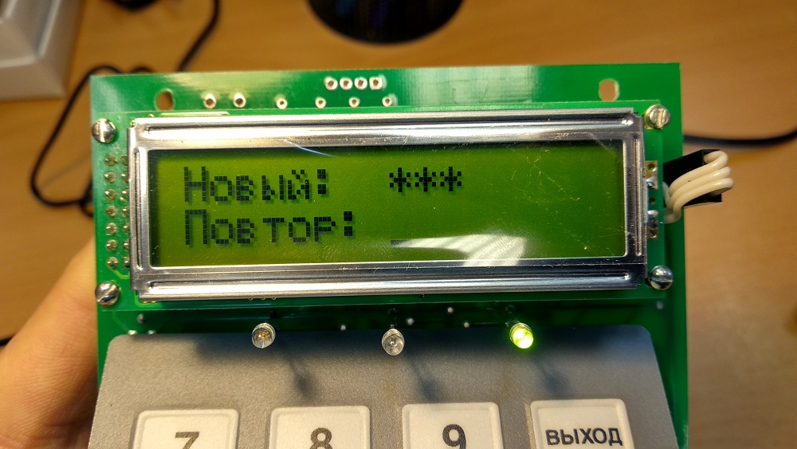
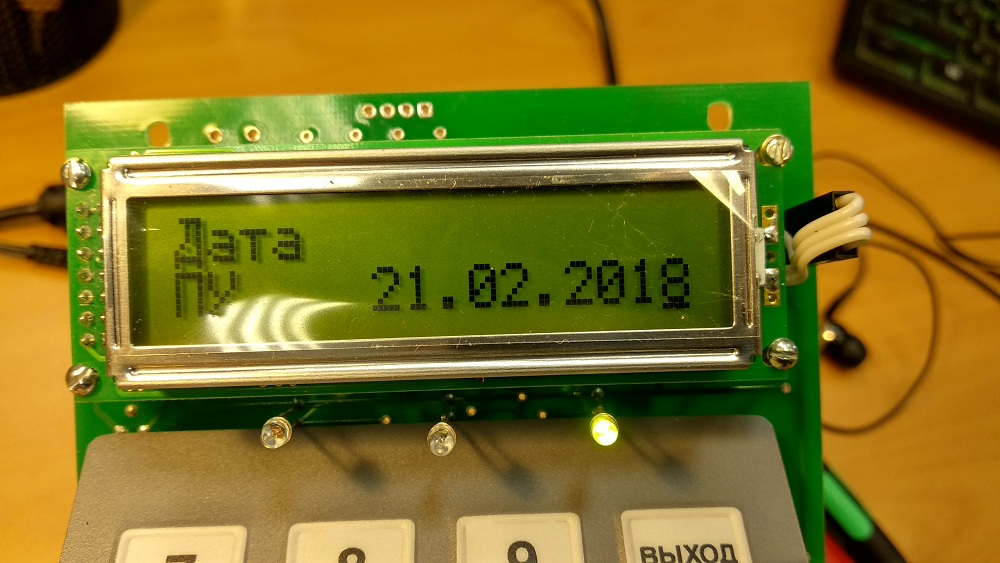

Пульт ПУ-АТ900
Получить на сладе:
- Микросхему AT89S52-24PU
- Микросхему AT27C512R
- Батарейку Panasonic 2032
- Если в составе СРК есть устройство сигнализации, получить Микросхему AT89C2051(по одной на каждое УС)
Получить со сборки комплект для пульта
 Старую версию платы необходимо дорабатывать от статики (добавить диодную сборку PESD12VS2UT):
Прошить M27C512:

- Подключить программатор
- Запустить программу ChipProg USB
- Вставить микросхему (Ключ вверху!)
- Выбрать микросхему ST Microelectronics M27C512 (Select device[1] или [2])
- Выбрать прошивку[3], в зависимости от типа системы (есть несколько видов: СРК, Портальный монитор, ДРГ, СРК в составе УДГ), также русское или английское исполнение):
- Если обычная СРК — шить версию 26.08.2019 (__Pult900L.hex)
- Если портальный монитор — _Portal.hex 26.08.2019
- Для СРК в составе УДГ — __Pult900Lrus.hex (в папке PU900UDG) 15.11.18
- Для ДРГ — _Pult900LSCR.hex 19.06.2019
- Device status: In socket. Ready
- Выбрать Auto programming
- Кликнуть Execute (или кнопку "Start" на программаторе)
- После прошивки наклеить на микросхему наклейку с версией прошивки
Если в составе СРК есть устройство сигнализации (УС) или МДВ с подключенным к нему фотодатчиком
(у портального монитора), можно сразу же прошить и микросхемы для них —
AT89C2501.
Устройства сигнализации могут быть с адресом от 11 до 20, соответственно существуют десять версий прошивки.
Также УС может быть без адреса, т.е. подключаться напрямую к БД через серый/розовый (по уровням),
в такую УС устанавливается микросхема с 11-ым адресом.
Прошивается микросхема аналогично 512-й, только необходимо выбрать в программе нужный тип микросхемы
(AT89C2501),
и прошивку (ppp11s.a03...ppp20s.a03)
-
Для портальных мониторов:
- м/с для УС прошиваются 11-ым адресом
- м/с для МДВ — 12-ым адресом
- После на микросхему наклеить наклейку с адресом УС (11...20)

Настройка пульта
- Микросхему AT89S52, прошитую M27C512 и батарейку установить на плату
- Установить перемычку в режим настройки.
- Подключить адаптер питания
- Подстроечным резистором выставить правильный уровень яркости сегментов ЖКИ. 
- Вот что будет на экране: 
- Каждая буква "е" на экране — это адрес каждого БД, таким образом к одному пульту можно подключить до десяти БД
- Клавишами "вправо" "влево" перемещаем курсор, клавишей "ввод" можно выбрать два варианта отображения: БД включен в систему и БД отсутствует. Номер позиции соответствует адресу для БД (т.е. от 1 до 10) Каждому из подключенных датчиков, с помощью цифровой клавиатуры, необходимо определить тип БД — для БДКГ-02, например, это клавиша "2". Для портальных мониторов выбирается 5-й (БДРМ-05) или 6-й (БДКН-05)
- Ввод параметров подтверждается клавишей "Ввод"
- К каждому блоку подключить сигнализацию. Клавишами "вправо" "влево" выбрать БД, затем клавишей "1" или "2" подключить сигнализацию (сигнализации) с 11-м или 12-м адресом соответственно. Стереть адрес можно клавишей "выход".
- Период опроса выставить 1 секунду.
- Адрес пульта — 1 (если пульт один. Может быть и другим, если в системе несколько пультов. Адрес пульта смотреть в РЭ). Если "подслушивающий" пульт — адрес 0.
- Сбросить историю клавишей "0".
- После завершения настройки вернуться на начальный экран и нажать клавишу "Выход" для сохранения введенных параметров!
- Отключить питание и переставить перемычку в рабочий режим. 
- Включить питание. Дождаться загрузки Пульт попытается опросить все настроенные в нем адреса БД и УС и, не найдя их, выдаст соответствующее предупреждение — при этом зеленый диод будет мигать, это значит в работе пульта есть какая-то ошибка. Прежде всего необходимо установить новый пароль — "555". По умолчанию паролем является время ПУ, поэтому необходимо зайти в режим времени,
- выбрать время ПУ и запомнить его
- (так, пароль ПУ с картинки будет "226"). После этого зайти в режим изменения пароля и выбрать "изменить пароль". 
- Ввести запомненное время, а в качестве нового пароля ввести 555. 
- После ввода нового пароля ПУ выдаст сообщение о принятии нового пароля. Теперь паролем ПУ будет 555
- Установить Дату и время ПУ 
- Установить рабочий порог(для каждого БД отдельно).
- Для БДКГ-02, -204 — рабочий: 500n, аварийный: 1000n
- Для БДКН-02 (плотность потока) — рабочий: 1, аварийный: 10
- Для БДКН-02 (мощность дозы) — рабочий: ?, аварийный: ?
- У портальных мониторов порогов нет (см. далее)
Значения порогов хранятся и в памяти блоков, и в памяти пульта. Значения в пульте обладают более высоким приоритетом:
если пороги выставлены и в блоке, и в пульте, после подключения блока к пульту значения порогов в блоки поменяются на значения хранящиеся в пульте.
Если же в пульте пороги НЕ БЫЛИ ВЫСТАВЛЕНЫ в пульт запишутся пороги из БД. Так, например, если в БДКГ-02 выставить пороги до подключения к пульту
(а пороги всегда выставляются в БД заранее), в пульте пороги можно НЕ ВЫСТАВЛЯТЬ вообще, они подхватятся из БД и станут приоритетными порогами пульта,
Разумеется, на каждый адрес пороги устанавливаются отдельно
- Мантиса значения порога выставляется цифровой клавиатурой, порядок (степень) с помощью клавиш "вверх" и "вниз"
- Установить аварийный порог(для каждого БД отдельно)
- На прошивке для портальных мониторов нет порогов (и соответствующих пунктов меню). В таких пультах настраивается "Период ложных, ч", ставить 10 часов:
- и параметр фона, ставить 103:
- Пульт настроен. После подключения к нему всех БД и УС пульт не должен выдавать никаких ошибок.
- Если пульт выдает ошибку Еппром — перезагрузить пульт, ошибка пропадет
- Если пульт выдает ошибку сети — зайти в настройки сети, отключить все БД, а после загрузки пульта опять включить, ошибка пропадет
- Если пульт выдает ошибку "Внутренняя ошибка" — то это означает, что в пульте не выставлена дата/время (может появиться, например, если из пульта достать-вставить батарейку)